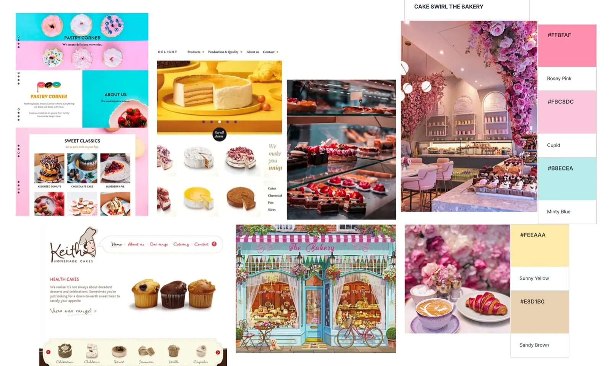
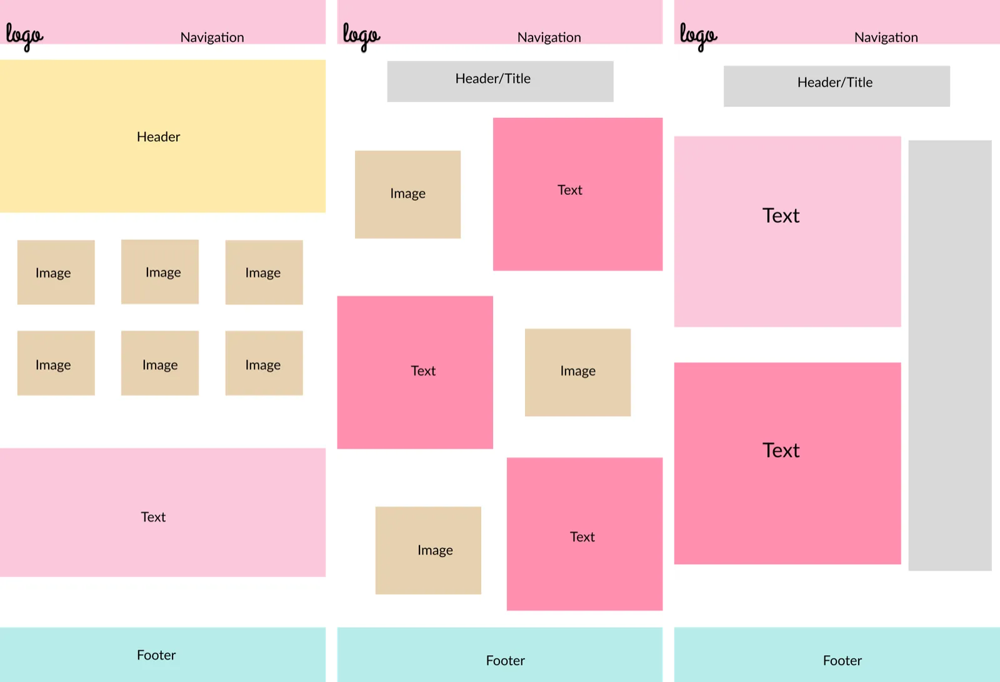
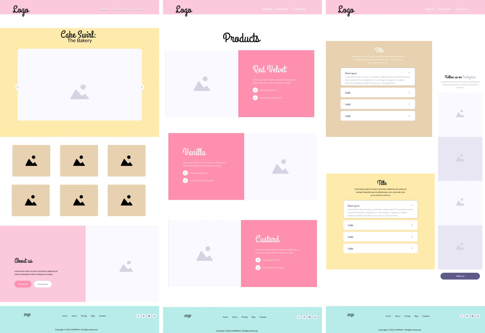
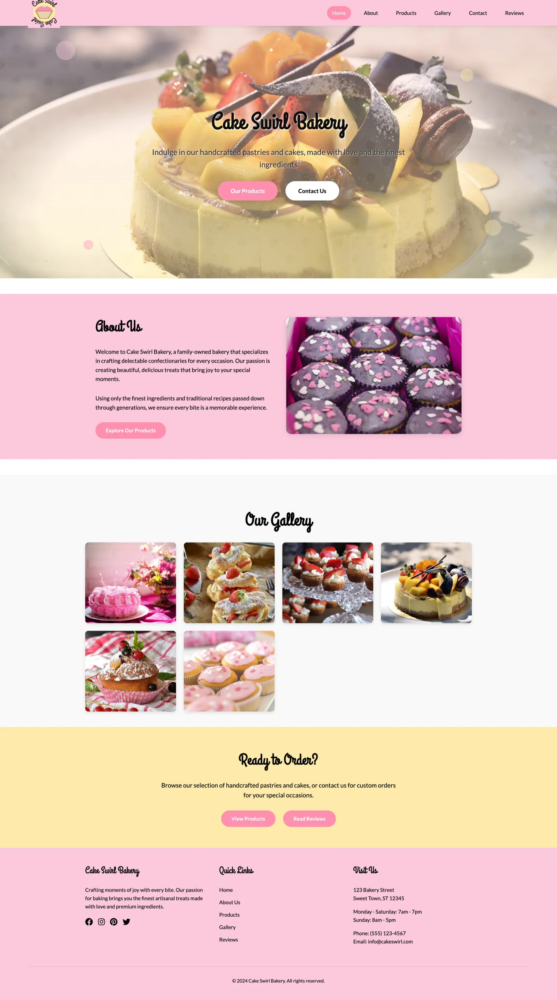
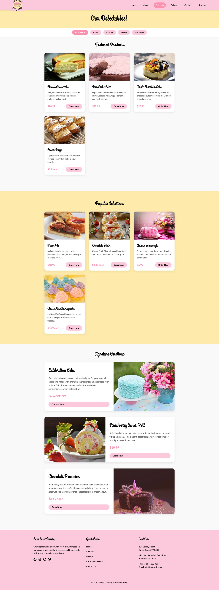
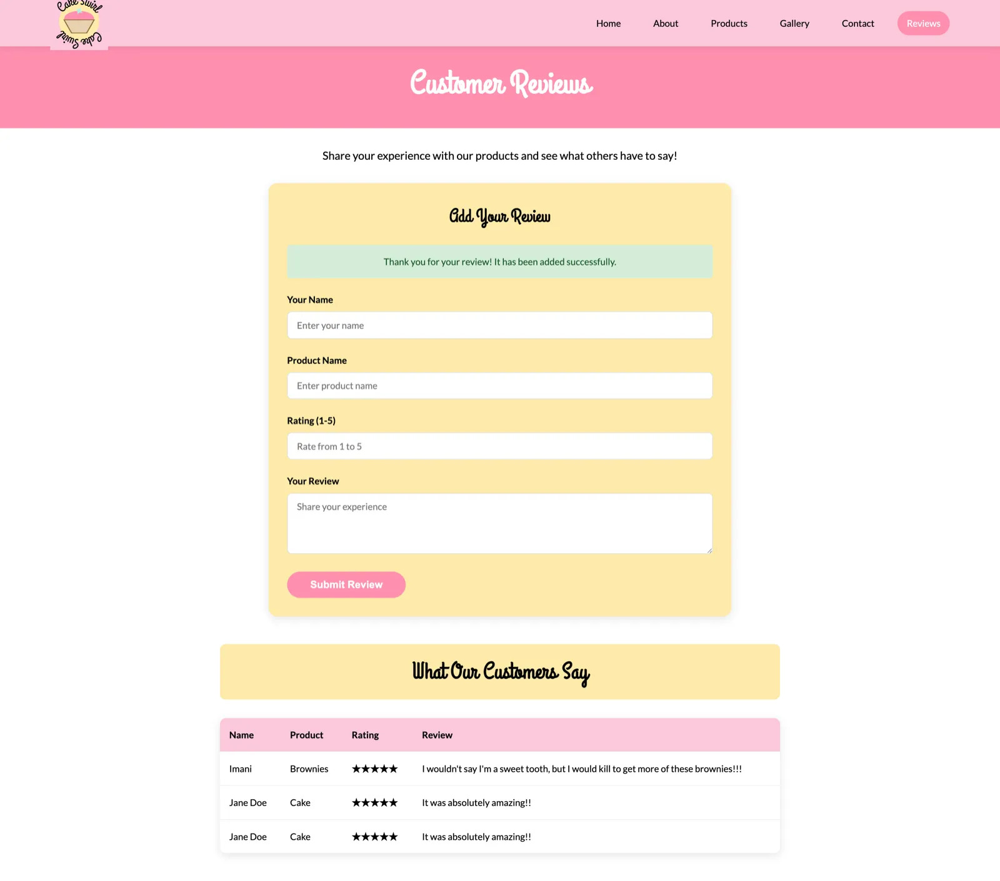

Web design · front end · PHP + MySQL
Cake Swirl
A responsive bakery website that shows off artisanal cakes and lets customers leave reviews. I designed the brand, prototyped it in Figma and built it with HTML, CSS, vanilla JavaScript and a PHP/MySQL back end.

What I set out to build
The project covers the full stack: UI/UX design combined with a working PHP/MySQL back end.
- Create a bakery website with a distinct brand identity.
- Make it responsive so it works well on every device.
- Build a customer review system backed by a database.
- Keep the navigation and layout easy to understand.
Research
I started by studying web design fundamentals and analysing more than 15 bakery websites, looking for common elements and user flow patterns.
- Successful sites kept clean layouts with a strong visual hierarchy.
- Poor designs suffered from content overload, like cluttered news sites.
- Effective bakery sites used appetising hero images, clear product categories and minimal navigation.
Inspiration: sites like Mubasic showed how interactivity and a restrained colour palette can make a site engaging.


Visual identity
The mood board collected bakery aesthetics and pastel colour schemes, set a bright, airy style for food photography, and gave the brand a personality that is playful but elegant.

Colour palette
Typography
- Grand Hotel for headings: cursive and whimsical.
- Lato for body text: clean and readable at small sizes.
Wireframes and prototypes
Low fidelity
The first wireframes set the basic layout, content hierarchy and user flow.
High fidelity (Figma)
I designed three complete pages: a homepage with a hero slider, a product gallery and a contact/review page, with the full colour scheme, typography and interactive elements for a realistic preview. The homepage went through more than 20 iterations based on feedback from potential users.


Building it
Layout and styling
A responsive layout with Flexbox and Grid, sticky navigation with the logo as a home button, animated buttons and hover states, and colour contrast checked for accessibility.
Carousel and validation
An image carousel with auto-rotation, manual controls and smooth transitions, plus form validation for reviews. I used vanilla JavaScript instead of libraries to keep load times down.
Review database
Each review stores a name or alias, a 1–10 rating and the review text. Customers submit reviews through a form (create) and all reviews are listed in date order (read).
Challenges
| Issue | Problem | Solution |
|---|---|---|
| Visual hierarchy | The pastel colours lacked contrast | Added dark accents and heavier font weights |
| Responsive behaviour | Elements overlapped on mobile | Media queries and flexible units |
| Database integration | Connection failures caused by syntax errors | Methodical code review and error logging |
The finished site
The site works end to end, has a consistent visual identity across every page, and stores customer reviews in the database. It scored 96/100 on PageSpeed with a 1.2 second load time, better than the industry average.




Reflection
This project developed my full-stack skills a lot. The main things I took away:
- How important thorough planning is in the design phase.
- How to troubleshoot across both front end and back end.
- The value of user feedback for refining a design.
- Good practice for writing maintainable, scalable code.
The site meets all the goals I set and gives a base to build full e-commerce on.
What I'd add next
Buying online
A shopping cart, payments and secure checkout.
Finding products
Categories, search and dietary filters such as gluten-free and vegan.
Customer profiles
Login, order history and a favourites list.
Dashboard
Content management plus sales analytics and reporting.